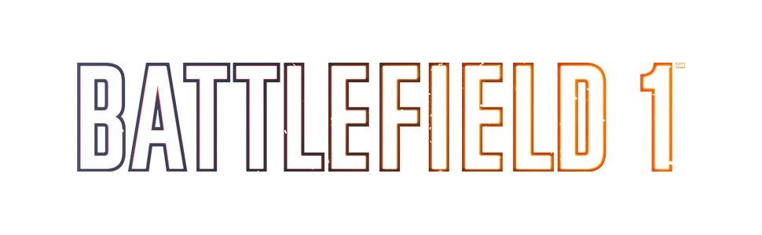
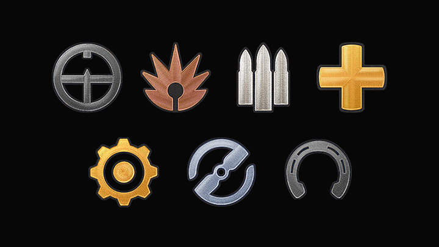

This website will contain everything you want to know about Battlefield 1!
This website will teach you about the weapons of Battlefield 1
and the history of WWI.
Pages will not only describe the weapon in-game but
also have historical background on their development and their impact.
Classes
Classes are roles that players can pick while they play the game. There are seven classes to choose from in Battlefield 1.

- Assault: The spearhead of any team. Equipped with shotguns and
submachine guns, they seek to close in on the enemy. They are also
equipped with explosive gadgets like dynamite, mines and rocket guns to
take out infantry and tanks alike.
- Medic: Tasked with making sure their team stays alive, medics are
equipped with bandages to heal teammates and syringes to revive them if
they are killed. They are also armed with rifles grenades and self-loading
rifles to give them good medium range firepower.
- Scout: In charge of long range combat, Scouts have accurate bolt action
rifles to spot and kill enemies from afar. They can also equip flares and
periscopes to mark enemy positions for teammates.
- Support: Equipped with machine guns and the ability to give ammo to
teammates, supports make sure a push never slows down. They can surpress
eneimies at long ranges or use mortars and timed explosve charges to clear well
entrenched enemies.
- Pilot and Tanker: Players are automatically assigned to this class if
they spawn in a vehicle. They are given repair tools to fix their vehicles.
- Cavalry: Players are assigned this class if they spawn on a horse.
They come equipped with a sword, bandages, and ammo packs, and also
have higher health. Use them to attack an unprotected flank.
Weapons